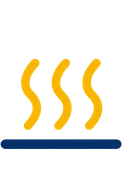
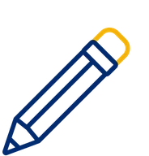

Lunchee — Style guide
Kolory
Wyłącznie kolory występujące w serwisie, nazwane po roli. Kolory produktów są osobną grupą: pokazują wariant, nie budują interfejsu.
Akcja i akcent
Tła
Tekst, linie, stany
Kolory produktów
Typografia
Dwa kroje z wytycznych klienta: Coolvetica (Adobe Fonts) do hasła i nagłówków, Inter (Google Fonts) do wszystkiego, co się czyta. Coolvetica ma interlinię 1.0, bo jej x-height jest duże i przy 1.2 nagłówek dwuliniowy się rozjeżdża.
Twój czas
na ciepły posiłek
Coolvetica 900 · var(--fs-h1) = clamp(3.2rem, 11vw, 7rem) / .92 · --tekst-mocny + --cta · wyłącznie hero strony głównej
Nagłówek sekcji z drugim członem
Lead pod nagłówkiem, zwykle jedno lub dwa zdania klienta. Szerokość ograniczona do 60 znaków.
Akapit treści w Inter 16/1.6, kolor --tekst. Długość wiersza do 70 znaków. Teksty klienta wchodzą co do znaku, także z myślnikami, których nasz anti-slop nie lubi.
Coolvetica 700 · var(--fs-h2) = clamp(2.4rem, 6vw, 4.2rem) / 1 · Inter 400 · 18/1.6 (lead) i 16/1.6 (akapit)
| Styl | Klasa / token | Krój i waga | Rozmiar / interlinia | Gdzie |
|---|---|---|---|---|
| H1 hero | .hero h1 / --fs-h1 | Coolvetica 900 | 112 px na 1440, 51 px na 390 / .92 | strona główna |
| H1 podstrony, H2 sekcji | .h2 / --fs-h2 | Coolvetica 700 | 67 px na 1440, 38 px na 390 / 1 | każda sekcja; drugi człon w .alt |
| H1 karty produktu | .buy h1 | Coolvetica 700 | clamp(2.3rem, 4.6vw, 3.4rem) / 1 | karty produktów i akcesoriów |
| H3 | --fs-h3 | Coolvetica 700 | 24.8 px / 1 | karty, kroki, kolumny stopki, legendy formularza |
| Etykieta (eyebrow) | .eyebrow / --fs-etykieta | Inter 700, uppercase, tracking .18em | 12.5 px / 1.6 | nad nagłówkiem sekcji, kod produktu |
| Lead | .lead / --fs-lead | Inter 400 | 18 px / 1.6 | pod nagłówkiem, kategoria |
| Tekst | body / --fs-tekst | Inter 400 | 16 px / 1.6 | akapity, FAQ, specyfikacja |
| Mały | --fs-maly | Inter 400–600 | 14.4 px / 1.6 | okruszki, notki, opisy kroków, etykiety pól |
| Przycisk | .btn | Inter 700 | 16 px / 1 | wszystkie przyciski |
Odstępy i rytm
Skala 8 px. Pomiar wykazał 45 wartości, z czego większość to pochodne em w przyciskach i etykietach; rytm pionowy i siatki trzymają się pięciu tokenów niżej.
--odstep-xs 8px--odstep-s 16px--odstep-m 24px--odstep-l 48px--odstep-xl 64–112px| Token | Wartość | Gdzie | Skąd |
|---|---|---|---|
--odstep-xs | 8 px | gap kropek, ikona → tekst w małych elementach | |
--odstep-s | 16 px | gap kart i list, padding pól, margines pod etykietą | |
--odstep-m | 24 px | padding kart i fieldsetów, nagłówek → treść | |
--odstep-l | 48 px | gap kolumn na desktopie (w sekcjach dwukolumnowych 72 px), margines nagłówka sekcji | 72 = 48 + 24 |
--odstep-xl | clamp(64px, 8vw, 112px) | pionowy padding każdej sekcji | 112 px na 1440 z makiety; 64 px na 390 |
--tresc | 1280 px | max szerokość kolumny treści | makieta 1536 minus 2 × 128 marginesu |
--margines | clamp(16px, 4vw, 48px) | boczny margines .wrap | 16 px na 390, 48 px od 1200 |
--r-s / --r-m / --r-l / --r-pill | 12 / 20 / 28 / 99 px | miniatury / karty i pola / zdjęcia sekcji / przyciski i etykiety |
Przyciski
Baza .btn, warianty jako modyfikatory. Kształt pill (--r-pill), wysokość 54 px, Inter 700 16 px, ikona strzałki po tekście.
| Stan | Co się zmienia | Uwagi |
|---|---|---|
| default | wg wariantu | |
| hover | --blue → --cta-hover · --yellow → --akcent-hover · --outline → wypełnienie granatem, tekst biały | tylko w @media (hover: hover) |
| focus-visible | outline 3 px --akcent, offset 3 px (globalna reguła) | na granacie widoczny, na żółtym przycisku kontrast obrysu z tłem 1:1, więc obrys wychodzi poza przycisk dzięki offsetowi |
| active | scale(.97) | |
| disabled | opacity .5, cursor not-allowed | np. LB795 Night |
| is-added | tło --ok przez 900 ms po dodaniu do koszyka | towarzyszy mu toast |
| Wariant | Tło | Tekst | Padding | Wysokość | Gdzie |
|---|---|---|---|---|---|
.btn--blue | --cta | --biel | 0 1.7em | 54 px | akcja główna: hero, Zobacz produkt, Dodaj do koszyka, Zamawiam i płacę |
.btn--yellow | --akcent | --tekst-mocny | 0 1.7em | 54 px | CTA na ciemnym tle: Dla firm, stopka |
.btn--outline | przezroczyste, ramka 1.5 px --tekst-mocny | --tekst-mocny | 0 1.7em | 54 px | akcja druga: Jak to działa, Kontynuuj zakupy |
.btn--outline-white | przezroczyste, ramka biała .7 | --biel | 0 1.7em | 54 px | adres e-mail w Dla firm |
.btn--sm | modyfikator | 0 1.1em | 44 px | „Zobacz” w kartach | |
.btn--block | modyfikator | pełna szerokość w kolumnie zakupu i koszyku | |||
.round-btn | przezroczyste, ramka --tekst-mocny | --tekst-mocny | 48 px | strzałki karuzeli momentów | |
.icon-btn | brak | --tekst-mocny | 48 px | konto, koszyk (licznik --akcent), menu | |
.qty | --biel, ramka --linia | 50 px | ilość na karcie i w koszyku |
<a class="btn btn--blue" href="produkt-lb745.html">Zobacz produkt <svg><use href="#i-arrow"/></svg></a> <button class="btn btn--blue" type="button" data-add="lb745" data-name="Lunchee LB745 City" data-img="assets/img/produkty/lb745.webp">Dodaj do koszyka</button>
Formularze
Pole 50 px, ramka 1.5 px --linia, zaokrąglenie 14 px. Etykieta nad polem, nie placeholder. Zgody w sklepie: osobny checkbox na regulamin, politykę i newsletter (szablon ~/.claude/data/sklep/templates/consents-checkout.html).
| Element | Klasa | Wysokość | Ramka | Focus | Błąd |
|---|---|---|---|---|---|
| input, select, textarea | .field | 50 px | 1.5 px --linia, r 14 | ramka --cta + cień 3 px rgba(0,84,175,.15) | .is-invalid: ramka --blad, komunikat .field__err |
| checkbox | .check | 22 px, accent --cta | systemowy | .is-invalid: tekst --blad | |
| radio w pigułce | .radio | 48 px | 1.5 px --linia, pill | zaznaczony: ramka --cta podwójna | |
| grupa pól | .fs + .fs__num | karta biała, r --r-l | |||
| sukces | .form__ok | --ok-tlo / --ok-tekst |
Walidacja w js/main.js: [data-form] blokuje wysyłkę, sprawdza checkValidity() i sumę kontrolną NIP (data-nip), ustawia fokus na pierwszym błędzie. Prototyp nie wysyła danych; komunikat sukcesu o tym mówi.
Komponenty treści
Karta (jedyna sekcja kart na stronie, wg reguły różnorodności)

.card: biel, r --r-m, cień --cien na hover · .card__img 4:3 na --tlo-alt (produkty: --tlo-produkt) · .card__img-hover: drugie ujęcie po najechaniu (cover, scale 1.18, mix-blend-mode multiply, bo zdjęcia WWW mają białe tło), tylko @media (hover: hover); packshot gaśnie, nazwa w --cta, przycisk wypełnia się granatem; na dotyku karta prowadzi do karty produktu, gdzie galerię przewija się palcem
Lista cech z ikoną, lista zestawu, swatche

Podgrzewa posiłek do 60°C w około 20 minut- Wyjmowany pojemnik ze stali nierdzewnej INOX
 pojemnik główny 1,7 l ze stali nierdzewnej INOX,
pojemnik główny 1,7 l ze stali nierdzewnej INOX, Torba termiczna – wygodny transport i lepsze utrzymanie ciepła
Torba termiczna – wygodny transport i lepsze utrzymanie ciepła
- Nightniedostępny
.feat: ikona 52 px w kole --tlo-akcent, separator --linia · .kit__list: miniatura 76×60 na --tlo-alt, numer w kole --akcent · .swatch: koło 52 px w kolorze produktu, aktywny ma obrys --cta z offsetem 3 px; niedostępny .swatch--off z dopiskiem
FAQ, cytat, notka, etykieta braku
Do jakiej temperatury podgrzewa Lunchee?
Lunchee podgrzewa posiłki do 60°C. Osiągnięcie tej temperatury może zająć około 20 minut.
Gdzie można używać Lunchee?
W pracy, biurze, samochodzie, na budowie, w trasie.
Bo każdy ma swój sposób. Swoje miejsce. Swój czas na ciepły posiłek.
Ważne: podgrzewanie odbywa się wyłącznie w głównym pojemniku INOX.
cena zdjęcie produktu do potwierdzenia
FAQ: natywne <details name="faq">, więc otwiera się jedno naraz bez skryptu; otwarte na --tlo-akcent, plus obraca się w minus · .quote: --tlo-akcent, cudzysłów --akcent · .note: lewa krawędź --akcent · .tbd: przerywana ramka i kropka --brak, oznacza treść do uzupełnienia przez klienta; przed oddaniem lista .tbd musi być pusta
Kroki, momenty, parametry, etykieta „niedostępny”
Układy sekcji (.steps__list, .moments__track, .feats, .stats, .reviews__track, .recipes__track, .way__compare, .story__row) żyją w 03 - Design/css/style.css, bo występują raz. Karuzele przewijają się palcem (scroll-snap), strzałki .round-btn i kropki .dots są nadpisaniem dla myszy; kontener ma data-przewijane dla audytu.
Sklep: galeria, zakup, koszyk
Prototyp nie ma cen ani backendu. Koszyk trzyma pozycje w localStorage pod kluczem lunchee-koszyk, każda strona odczytuje go i pokazuje licznik. Przy wdrożeniu deweloper podmienia obiekt cart w js/main.js na własne API; klasy i atrybuty data-* zostają.
| Element | Klasa / atrybut | Zachowanie |
|---|---|---|
| Galeria produktu | [data-gallery], .gallery__main, .gallery__thumbs, .gallery__arrow, .gallery__dots | przewijanie palcem z snapem; miniatury pionowe od 900 px; strzałki po najechaniu; klawisze ← → gdy galeria ma fokus; kropki na telefonie |
| Scena wyboru koloru (strona główna) | [data-picker], .picker__stage, .thumbs | klik w swatch podmienia packshot z przenikaniem i miniatury; Night pokazuje status i zmienia CTA na „Zobacz model” |
| Dodaj do koszyka | [data-add][data-name][data-img] | bierze ilość z sąsiedniego .qty, zapisuje, pokazuje .toast z linkiem do koszyka, przycisk na 900 ms w --ok |
| Pasek zakupu na telefonie | .sticky-buy | wsuwa się, gdy główny przycisk [data-main-buy] zniknie w górę; ukryty od 900 px |
| Koszyk | [data-cart-list], .cart__item, .cart__summary | zmiana ilości i usuwanie na żywo; pusty stan z CTA do kategorii; wartości cenowe jako .tbd |
| Zamówienie | form.checkout, .fs, [data-toggle], [data-nip] | faktura rozwija pola i włącza wymagalność; NIP z sumą kontrolną; zgody osobno; po wysłaniu koszyk się czyści |
| Toast | .toast, role="status" | 3,2 s na dole ekranu; komunikat czytany przez czytnik ekranu dzięki aria-live |
Wymogi PL do domknięcia przez /sklep compliance w etapie 6: Omnibus przy każdej cenie przekreślonej, dane sprzedawcy w stopce, formularz odstąpienia na stronie zwrotów, KSeF w informacji dla deweloperа.
Komponenty złożone
Nagłówek i stopka mają jedno źródło: 03 - Design/_build/partials/. Skrypt _build/build.py wstrzykuje je w każdą podstronę między znacznikami <!-- @header -->. Poprawka menu to edycja jednego pliku i jedno uruchomienie skryptu.
| Element | Wartość | Skąd |
|---|---|---|
| wysokość nagłówka | 76 px | logo 48 px pola + 2 × 14 px |
| logo | 128 px na telefonie, 158 px od 1000 px; .logo-mark to czarny SVG jako maska CSS w kolorze --cta | klient dał logo tylko czarne i białe, granat wymagany przez makietę |
| tło | --tlo z .92 + blur 10 px, cień po przewinięciu (.is-scrolled) | |
| menu desktop | od 1000 px, linki Inter 600 16 px, hover i bieżąca strona na --tlo-akcent (aria-current nadaje skrypt) | |
| menu mobilne | .mobile-nav pełnoekranowe pod nagłówkiem, Coolvetica 32 px, zamyka Escape i klik w link, blokuje przewijanie tła | |
| stopka | --tlo-ciemne, 4 kolumny od 900 px, logo białe z NOVEEN (jedyne miejsce z NOVEEN w logo, zgodnie z wytyczną „NOVEEN obok, nie na pierwszym planie”) |
<!-- 03 - Design/_build/partials/header.html — edytuj tu, potem: python3 _build/build.py -->
<header class="header">
<div class="wrap">
<a href="index.html"><span class="logo-mark" role="img" aria-label="Lunchee"></span></a>
<nav class="nav">…</nav>
<div class="header__actions">…</div>
</div>
</header>
Ikonografia
Dwa zestawy. Ikony marki to 9 plików WebP z paczki ImageGen (granat + żółty, 192 px), wstawiane w koło --tlo-akcent 52 lub 104 px; nie kolorują się przez CSS. Ikony interfejsu to sprite SVG w <symbol> na początku każdej strony, linia 1.8–2.2, currentColor, rozmiar bazowy 24 px.

personalizacjaOdznaki „60°C” i „3 źródła zasilania” (odznaki.png) pochodzą z kreacji klienta i zostają rastrem; nie przerysowywać.
Breakpointy
| Próg | Co się zmienia |
|---|---|
| < 640 px | jedna kolumna wszędzie; karty jedna pod drugą; karuzele (kroki, momenty, miniatury, galeria) przewijane palcem z kropkami; margines 16 px; pasek „Do koszyka” przyklejony do dołu; menu w hamburgerze |
| 640–899 px | karty w dwóch kolumnach, pola formularza po dwa w rzędzie |
| 900–999 px | sekcje dwukolumnowe (hero z tekstem na zdjęciu, porównanie, wybór koloru, karta produktu z miniaturami pionowymi, koszyk, zamówienie); toast i sticky-buy znikają; menu nadal w hamburgerze |
| ≥ 1000 px | menu poziome, strzałki karuzeli momentów, momenty w 4 kolumnach |
| ≥ 1100 px | kroki w 5 kolumnach, karty w 4 (produkty w 3), persony w 5 |
| ≥ 1280 px | treść zatrzymuje się na --tresc, margines 48 px |
Wzorce dotykowe: ~/.claude/data/responsive-conversion/references/special-cases.md. Zasada: dotyk jest bazą, hover nadpisaniem (drugie zdjęcie w karcie, strzałki galerii).
Dostępność
Kontrasty z pomiar.py (POMIARY.md). Pierwszy pomiar znalazł 4 pary poniżej progu; wszystkie dotyczyły etykiet #946800 i cytatu #a57100. Poprawka: --tekst-etykieta: #7a5600, cytat w --tekst-mocny, etykieta na granacie w --tlo-akcent.
| Para | Kontrast | Próg | Ocena |
|---|---|---|---|
| --tekst-slaby na --tlo | 7,0:1 | 4,5 | OK |
| --tekst-etykieta na --tlo-akcent (12 px bold) | 5,8:1 | 4,5 | OK (po poprawce, było 3,75) |
| --tekst-etykieta na --tlo-alt (hero) | 5,5:1 | 4,5 | OK (było 4,02) |
| --cta na --tlo (nagłówki .alt) | 6,9:1 | 3,0 (duży tekst) | OK |
| --biel na --cta (przycisk) | 7,3:1 | 4,5 | OK |
| --tekst-mocny na --akcent (przycisk żółty) | 7,8:1 | 4,5 | OK |
| --tekst-na-ciemnym na --tlo-ciemne | 9,9:1 | 4,5 | OK |
| --tlo-akcent na --cta (etykieta w Dla firm) | 12,4:1 | 4,5 | OK (było --akcent 4,06) |
Poza kontrastem: link „Przejdź do treści”, :focus-visible globalnie, aria-expanded i aria-controls na przycisku menu, aria-pressed na swatchach, aria-current w nawigacji i miniaturach, role="status" na toaście, cele dotykowe ≥ 44 px (audyt.py: 0 uwag na 16 stronach), prefers-reduced-motion wyłącza pojawianie i przejścia.
Robić / nie robić
· jeden .btn--blue na ekran jako akcja główna, reszta .btn--outline
· żółty jako akcent i CTA na ciemnym tle, nigdy jako tło całej sekcji
· teksty klienta co do znaku, braki oznaczone .tbd
· nowa wartość koloru albo odstępu najpierw do tokens.css, potem użycie
· logo samo „lunchee”; wariant z NOVEEN tylko w stopce
· zdjęcia produktu na --tlo-produkt, zdjęcia scen w pełnym kadrze z r --r-l
· nie pisać hex w style.css ani w atrybucie style
· nie robić drugiej sekcji kart na tej samej stronie (reguła różnorodności układu)
· nie wymyślać cen, terminów dostawy ani danych sprzedawcy do placeholderów
· nie rysować Coolvetiką tekstu ciągłego (wytyczna klienta)
· nie self-hostować Coolvetiki (licencja Adobe Fonts)
· nie dokładać animacji poza reveal i przejściami --przejscie
Jak to podpiąć
<link rel="stylesheet" href="styleguide/fonts.css"> <link rel="stylesheet" href="styleguide/tokens.css"> <link rel="stylesheet" href="styleguide/components.css"> <link rel="stylesheet" href="css/style.css"> <!-- tylko układy sekcji -->
Serwer podglądu stoi w korzeniu projektu (port 8887), inaczej ścieżki styleguide/ dają 404. Podstrony generuje python3 _build/build.py z katalogu 03 - Design: karty produktów z _build/produkty.json, nagłówek i stopka z _build/partials/.
Zasada nadrzędna: strona nie ma własnej kopii wartości. Poprawka koloru czy wysokości przycisku wchodzi do tokens.css albo components.css. Jeśli trzeba zmienić coś w jednym miejscu, to nie jest komponent i wymaga osobnej klasy.
Kontrola rozjazdu przed oddaniem (stan 2026-09-19: 0 tokenów nieużywanych, 1 kolor poza paletą: #000000 z currentColor w sprite SVG):
python3 ~/.claude/data/styleguide/pomiar.py --url "http://localhost:8887/03%20-%20Design/" --drift --tokens "04 - Styleguide/tokens.css"
Coolvetica: przed publikacją założyć Web Project na fonts.adobe.com i wkleić <link> Typekitu do partials/head.html przed fonts.css. Do tego czasu strona na komputerze bez Coolvetiki pokaże krój zastępczy.